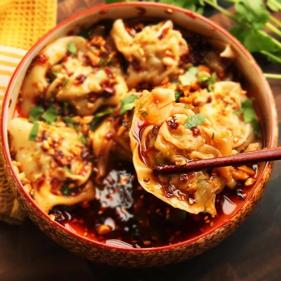

30 minutes
4 servings
(30-40 wontons)

In your main bowl, whisk together the minced garlic, soy sauce, vinegar, sesame oil and sugar until the sugar dissolves
Stir in the chili oil, sesame seeds and the sliced green onions.
In a medium bowl, mix the ground chicken, soy sauce, sesame oil, rice wine, ginger, garlic, green onions, cornstarch and pepper
Mix in one direction until the mixture becomes slightly sticky
With a wonton wrapper on your hand or on a cutting board, put about 1 teaspoon of filling in the center (dont' put too much or the wontons won't close)
Dip your finger in water and wet all four edges of the wrapper
Fold the wrapper in half diagonally to form a triangle, press the edges firmly and bring the two bottom corners together
Cook them in batches of 10 - 15 so they don't crowd
Bring a large pot of water to a rolling boil and drop the wontons GENTLY (so you don't get burn and the wontons don't break)
Stir gently (only once) so they don't stick to the bottom.
Once they're floating at the top, let them cook for 2-3 more minutes and take the wontons out with a slotted spoon, daining all the water
Drop them directly into the sauce bowl
Gently toss the wontons in the bowl to coat them completely in the sauce
Spoon extra sauce over the top and garnish with a few extra scallions (green onions)